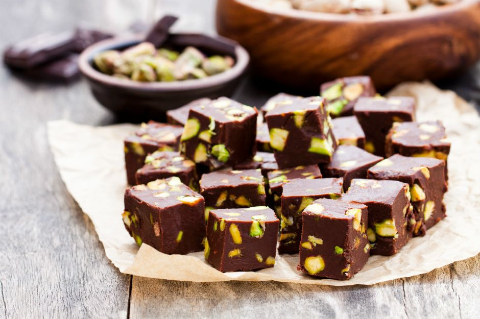

- Kaç Kişilik: 4 Kişilik
- Hazırlama Süresi: 30 Dk.
- Pişirme Süresi: 10 Dk.
Çikolata Küpleri Tarifi için Malzemeler
- 350gr Bitter Çikolata
- 150ml Krema
- 1 Çorba Kaşığı Tereyağı
- 150gr Şam Fıstığı (Badem yada Fındık da Olabilir.)
Çikolata Küpleri Nasıl Yapıır?
- Bitter çikolatayı benmari usulü doğrayın.
- Eriyen çikolatanın üzerine krema ve tereyağı ekleyip iyice karıştırıp tencereyi bir tezgaha alın.
- Şan fıstıkları havanda çok az dövüp irili ufaklı parçalara bölün.
- ufalanan fıstıkları çikolatalı karışıma ekleyip karıştırın.
- Hazırladığınız çikolatayı varsa alüminyum hazır bir kare tepsiye, yoksa kenarlarından taşarak yağlı kağıt yerleştirdiğiniz küçük bir tepsiye dökün.
- Buzdolabında iki saat bekletin.
- Çikolatayı kalıptan çıkartın. Kare parçalara bölün.